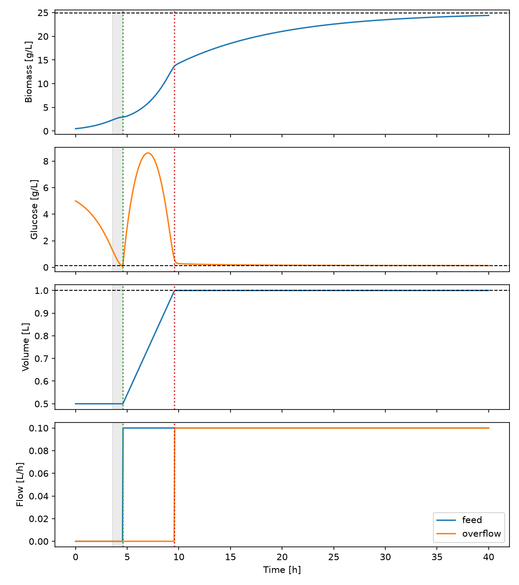
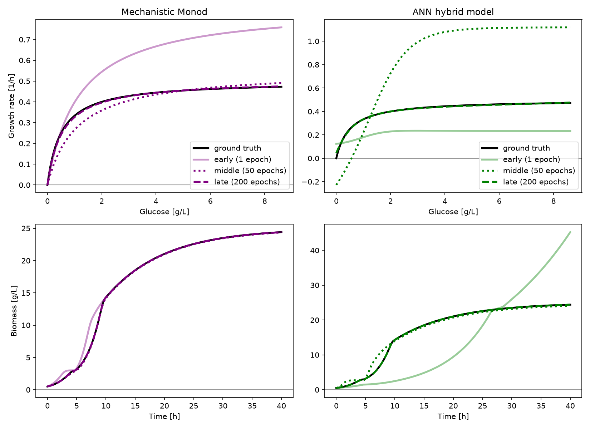

Continuous culture with controlled overflow¶
Demonstrates. One process moving through batch, a pause, fed-batch filling, and continuous culture; equal continuous inflow and outflow traces; and the same growth law learned as either two Monod parameters or a 33-parameter neural network.
A continuous process is not a separate solver mode in Hybrax. It is an ordinary physical-space process whose volume description contains continuous inflows and outflows. This example makes that concrete, then asks how much kinetics can be learned from just 21 noiseless biomass measurements and 21 noiseless glucose measurements.
The complete runnable example lives in examples/gallery_continuous_overflow/.
From batch to continuous operation¶
The run starts with 0.5 L containing 0.5 g/L biomass and 5 g/L glucose. Its four phases are:
Batch: no liquid crosses the vessel boundary.
Feed delay: after a simple exponential-growth estimate of the batch end, the feed remains off for another hour. Bioreaction continues during this interval.
Fed-batch: a 0.1 L/h feed containing 50 g/L glucose fills the vessel to 1 L.
Continuous culture: an outflow starts at 0.1 L/h, matching the feed and holding the vessel at 1 L.
import hybrax.format as hxf
collection = hxf.serialization.load_process_collection(WORK / "data.json")
process = collection.processes["continuous_1"]
for name, change in process.volume.volume_changes.items():
print(f"{name:10s} {type(change).__name__:8s} continuous={change.is_continuous}")
feed Inflow continuous=True
overflow Outflow continuous=True
Both volume changes are controlled: their cumulative-volume traces are known inputs. The outflow is the realized trace of a passive overflow, not a declarative level controller. Hybrax does not infer when a dip tube begins spilling from the simulated volume. Here the start time is known, and equal prescribed rates make the level balance exact after the vessel reaches 1 L.
process_type="continuous" is useful metadata, but it does not create this behavior.
The Inflow, Outflow, and their time series do.
The biological ODE declares one specific rate, growth (mu). Transport terms for feed,
outflow, and changing volume are assembled separately from the process description:
hxf.print_rhs_ode(process)
+---------------------- RhsOde Structure: continuous_1 -----------------------+
| Rates (declaration order: this is `name_modeled_rates`) |
+-----------------------------------------------------------------------------+
| Name | Lower | Upper |
| mu | — | — |
+-----------------------------------------------------------------------------+
| Derivatives |
+-----------------------------------------------------------------------------+
| State | Unit | Biological | Feed | Dilution / retention |
| biomass | [g/L] | mu * biomass | | − dilution(feed) |
| glucose | [g/L] | -mu * biomass / 0.5 | + feed(feed) | − dilution(feed) |
+-----------------------------------------------------------------------------+
| Volume |
+-----------------------------------------------------------------------------+
| State | Unit | Additions | Removals |
| V | [L] | feed | − |overflow| |
+-----------------------------------------------------------------------------+
Synthetic measurements¶
The ground truth is a Monod growth law,
with a fixed biomass yield of 0.5 g/g. The dataset stores biomass and glucose every 2 h from 0 to 40 h: 21 points per trace, 42 scalar observations in total. The observations are noiseless so this example isolates model structure and optimization from measurement noise.
Run the complete example. It prepares the data, trains both candidate reaction modules,
retains epochs 1, 50, and 200, reconstructs dense physical trajectories with
solve_physical_states, and writes both figures used below.
training monod model...
training ann model...
{
"fitted_mu_max": 0.504756355785169,
"fitted_Ks": 0.5456589969091471,
"ann_rate_rmse": 0.0047650922474698045,
"final_biomass": 24.410486715263367,
"final_glucose": 0.12839198560395768,
"maximum_volume": 0.9999999999999994,
"steady_biomass": 24.9375,
"steady_glucose": 0.125
}
process plot: /home/mgotsmy/code/bpbench/hybrax/docs/source/_data/out/runs/gallery_continuous_overflow/process.png
training plot: /home/mgotsmy/code/bpbench/hybrax/docs/source/_data/out/runs/gallery_continuous_overflow/training.png

The gray band is the one-hour feed delay. The green vertical line starts the feed; the red line starts the overflow. Volume rises linearly during fed-batch and remains exactly 1 L once the two flow rates match. The dashed horizontal biomass and glucose lines are the analytic chemostat steady state. At 40 h the process is close, but not yet exactly at that asymptote.
Two representations of the same rate¶
The mechanistic candidate has only two trainable values, mu_max and Ks. Their logs
are trained so both physical parameters remain positive. They start at 1.0 h⁻¹ and
1.0 g/L, deliberately away from the ground truth.
1class FittedMonodModule(UserReactionModule):
2 """Monod growth with positive, trainable ``mu_max`` and ``Ks``."""
3
4 log_mu_max: jax.Array = trainable_field()
5 log_ks: jax.Array = trainable_field()
6 i_glucose: int = eqx.field(static=True)
7
8 def __init__(self, *, i_glucose, **scale_kwargs):
9 super().__init__(**scale_kwargs)
10 self.i_glucose = i_glucose
11 self.log_mu_max = jnp.log(jnp.asarray(1.0))
12 self.log_ks = jnp.log(jnp.asarray(1.0))
13
14 def __call__(self, t, inputs: ReactionInputs) -> ReactionOutputs:
15 del t
16 states = self.unscale_modeled_RMCs(inputs.SCL_modeled_RMCs)
17 glucose = jnp.clip(states[self.i_glucose], 0.0, None)
18 mu = jnp.exp(self.log_mu_max) * glucose / (jnp.exp(self.log_ks) + glucose)
19 return ReactionOutputs(
20 SCL_modeled_BiologicalOde_rates=(
21 self.scale_modeled_BiologicalOde_rates(jnp.asarray([mu]))
22 ),
23 SCL_modeled_Inflows_rates=jnp.zeros(0),
24 SCL_modeled_Outflows_rates=jnp.zeros(0),
25 )
The neural candidate sees only scaled glucose and emits the same declared growth rate.
Its 1 → 4 → 4 → 1 MLP has 33 trainable parameters. It does not receive time, biomass,
feed rate, outflow rate, or volume.
1class AnnGrowthModule(UserReactionModule):
2 """A 33-parameter ``1 → 4 → 4 → 1`` glucose-to-growth network."""
3
4 mlp: eqx.nn.MLP = trainable_field()
5 i_glucose: int = eqx.field(static=True)
6
7 def __init__(self, *, i_glucose, key, **scale_kwargs):
8 super().__init__(**scale_kwargs)
9 self.i_glucose = i_glucose
10 self.mlp = eqx.nn.MLP(
11 in_size=1,
12 out_size=1,
13 width_size=4,
14 depth=2,
15 activation=jax.nn.tanh,
16 key=key,
17 )
18
19 def __call__(self, t, inputs: ReactionInputs) -> ReactionOutputs:
20 del t
21 glucose = inputs.SCL_modeled_RMCs[self.i_glucose]
22 mu = self.mlp(jnp.asarray([glucose]))
23 return ReactionOutputs(
24 SCL_modeled_BiologicalOde_rates=mu,
25 SCL_modeled_Inflows_rates=jnp.zeros(0),
26 SCL_modeled_Outflows_rates=jnp.zeros(0),
27 )
build_reaction_module selects between these candidates from the config. The process,
training targets, ODE wrapper, and physical transport terms remain unchanged.
1def build_reaction_module(*, config, seed, training_parent_collection, **kwargs):
2 process = next(iter(training_parent_collection.processes.values()))
3 names = list(build_rhs_ode(process).name_modeled_RMCs)
4 common = {
5 "i_glucose": names.index("glucose"),
6 **{key: value for key, value in kwargs.items() if key.startswith("SCALE_")},
7 }
8 # Both candidates occupy the same reaction-module slot and emit the same
9 # declared biological rate. Only their parameterization differs.
10 if config.custom.model == "monod":
11 return FittedMonodModule(**common)
12 if config.custom.model == "ann":
13 return AnnGrowthModule(key=jax.random.key(seed), **common)
14 raise ValueError(f"unknown model: {config.custom.model!r}")
What training learns¶

The upper panels inspect the learned rate itself, not just its integrated trajectory. That distinction matters: a trajectory can look plausible while its local rate law is wrong. The lower panels show how those rates accumulate into biomass over all four operating phases. Black lines are dense simulator references; training still sees only the 21 timestamps per measured trace.
The two-parameter Monod model moves toward the correct curve in an interpretable way. The ANN begins with rates that can be negative or much too large because no mechanistic shape constraint was imposed. By epoch 200, both reproduce the observed trajectory and the ANN closely approximates the true rate over the glucose range visited by this run. Unlike the Monod law, the ANN does not force exactly zero growth at zero glucose; the small endpoint offset remains visible.
results = json.loads((WORK / "results.json").read_text())
print(f"fitted mu_max: {results['fitted_mu_max']:.4f} 1/h")
print(f"fitted Ks: {results['fitted_Ks']:.4f} g/L")
print(f"ANN rate RMSE: {results['ann_rate_rmse']:.4f} 1/h")
fitted mu_max: 0.5048 1/h
fitted Ks: 0.5457 g/L
ANN rate RMSE: 0.0048 1/h
Do not read the ANN curve beyond the observed glucose range as validated extrapolation. The mechanistic law carries a saturation assumption outside the data; the ANN does not. That is the central tradeoff here: more structural prior and directly interpretable parameters versus a more flexible learned rate.
Practical takeaways¶
A controlled continuous
Outflowis supported in physical-space training and prediction just like a controlledInflow.Equal prescribed inflow and outflow rates are the simplest representation when the realized overflow trace is already known.
process_typerecords intent; the volume changes define dynamics.Inspect learned rates as well as trajectories. Integration can conceal a poor local law.
Sparse, noiseless data are enough for this small demonstration. Real experiments need noise-aware validation across independent processes.
See also¶
Run the example yourself at
./source/_data/out/runs/gallery_continuous_overflow/.
Volume, feeds and events: how inflows, outflows, feed composition, and cumulative-volume traces are represented.
The Reaction Module: the scaled input/output contract used by both candidates.
Mechanistic models: more structured rate laws and parameter identifiability.
Feeds, boluses and samples: controlled inputs in a fed-batch process.